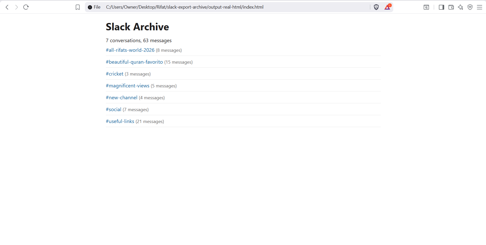

Slack exports are not built for review, audits, or evidence.
They arrive as thousands of JSON files spread across folders, referenced by IDs instead of names. The result is unreadable and unsearchable for HR, legal, compliance, and auditors.
Most "Slack viewers" help you browse an export. They do not produce an artifact you can rely on.
If you've ever thought:
- "How do I search this export?"
- "How do I hand this to legal?"
- "Why is this unreadable?"
You're not alone.
This tool generates a static Slack archive you can rely on.
You get:
- Deterministic, read-only HTML output
- User and channel names resolved from IDs
- Offline full-text search (including prefix search)
- Shareable folder suitable for review or retention
- File-link manifest for attachment tracking
The output is a folder of static files — not an app, not a session, not a browser toy.
No server. No cloud processing. Just files you control.
See it in action

How it works
No servers. No processing pipelines. No state.
- Drop in your Slack export ZIP
- Generate the archive locally
- Hand the output to HR, legal, auditors, or archive it long-term
That's it.
Who this is for
This tool is not for casual browsing. It is for situations where accuracy, traceability, and offline access matter.
- IT & Workspace Admins
- Compliance and HR reviews
- Legal or internal investigations
- Slack migrations and workspace shutdowns
If you need something HR or legal can actually read, this is for you.
Why local matters
Uploading Slack exports to third-party servers is often not allowed. Browser-only viewers are ephemeral and unverifiable.
- Your data never leaves your machine
- No Slack tokens required
- Safe for sensitive or regulated environments
- Works offline and in air-gapped setups
Everything happens locally, and the result is a permanent artifact.
What's included
- Static HTML archive output
- Channel, DM, and message timelines
- User and channel name resolution
- Fast, offline full-text search
- Enterprise export compatibility
- File-link manifest (what's referenced vs missing)
No subscriptions. No surprises.
Guarantees
- Deterministic output — same input ZIP, same archive
- Read-only, static files — no mutation, no state
- No telemetry, no analytics, no data collection
If it doesn't work on your export, you'll know immediately.
FAQ
- How is this different from browser-based Slack viewers?
- Browser-based viewers are session-based tools for casual exploration. This tool generates a deterministic, static archive that can be reviewed, shared, and retained independently of the tool itself.
- What exports are supported?
- Slack exports in the standard ZIP structure. The archive includes whatever data is present in your export.
- Does it include private channels or DMs?
- Usually not. Most workspaces using Slack's Standard Export only include public channel messages and file links. Private channels, DMs/group DMs, and edit/deletion logs are only included when Slack provides an approved Compliance/Enterprise export (or another Slack-approved export that contains that data). This tool does not bypass Slack's export restrictions.
- What about files and attachments?
- Slack exports typically include file metadata and links, not the raw file contents. The tool generates a file-link manifest showing what's referenced vs missing so you can track what was shared.
- Does it work offline?
- Yes. The generator runs locally. The output is static HTML you can open in any browser without an internet connection.
- Is my data secure?
- Your data never leaves your machine. No uploads, no Slack tokens, no cloud processing.